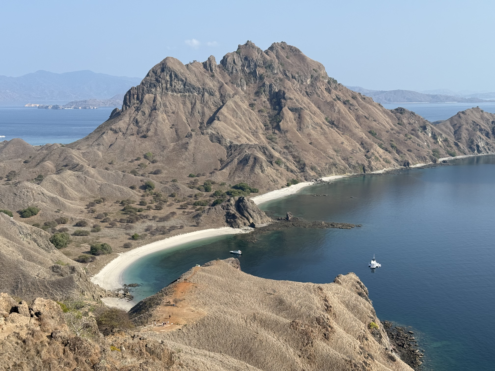

Komodo Island, Indonesia
A rugged volcanic island in the heart of the Lesser Sunda Islands, home to the world's largest lizard and some of the most striking pink-sand beaches in Southeast Asia.

The viewpoint over Komodo National Park — dry volcanic hills and crescent beaches.
Komodo Island sits within Komodo National Park, a UNESCO World Heritage Site shared between the islands of Komodo, Rinca, and Padar. It is best known as the natural habitat of the Komodo dragon, a monitor lizard that can grow over three metres long and is found wild in only a handful of places on Earth.
Beyond the dragons, travellers come for the hiking trails, the viewpoints over turquoise bays, snorkelling with manta rays, and quiet beaches — including the famous pink beach, coloured by fragments of red coral.
Best season
April to June and September to November — sample guidance, check current conditions before travel.
Getting around
Boat tours from Labuan Bajo are the standard way to reach the islands.
Park status
UNESCO World Heritage Site since 1991; entry permits apply.
Location: East Nusa Tenggara, Central Indonesia
Komodo Island lies between Sumbawa to the west and Flores to the east — open the map to explore.
Komodo Island is part of East Nusa Tenggara province, roughly 300 kilometres east of Bali. It lies in the strait between the larger islands of Sumbawa and Flores, and together with Rinca and Padar forms the core of Komodo National Park.
The nearest travel hub is the small port town of Labuan Bajo on Flores, which serves as the jumping-off point for nearly all trips to the park. There is no accommodation or settlement for visitors on Komodo Island itself — day trips and liveaboard boats operate out of Labuan Bajo.
Getting There
Most travellers fly into Labuan Bajo (LBJ) via Bali or Jakarta — the flight from Bali takes around an hour. From Labuan Bajo, the park is reached by speedboat or slower phinisi sailing boat, with day trips, multi-day boat tours, and liveaboards all available through local operators. Once inside the park, ranger-guided walks are required to see the Komodo dragons safely.
Sample guidance only: confirm current flight routes, park permit rules, and tour operators with official sources before booking.
Both buttons open the linked travel pages in a new browser tab.